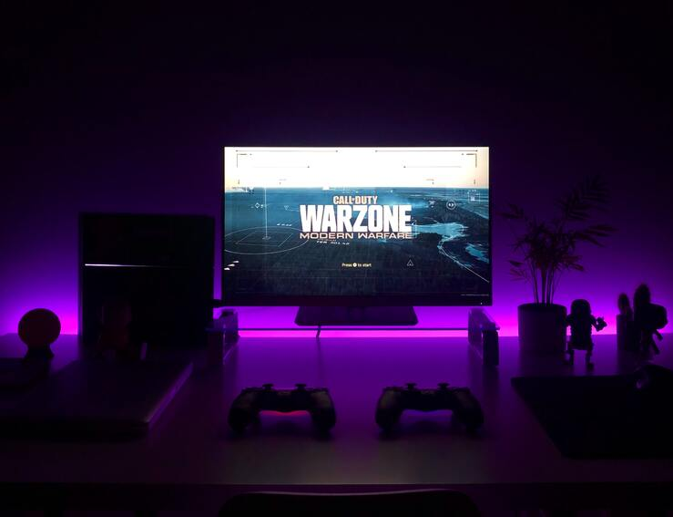
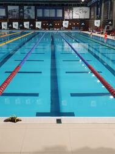

Telkens ik Harry Potter lees/kijk voelt het voor mij weer als thuiskomen.

als het programma klaar is, geeft het mij een voldoening waar ik trots op ben.

Het liefst game ik op mijn playstation 4, al kan je me ook vaak vinden voor een game op de computer.

>
Het zwemmen gaf me een vrijheid, waardoor ik even al mijn gedachten kon links laten liggen.
Magie is waar ik al van kinds af aan gefascineerd door ben.
Lezen brengt me telkens weer tot rust.